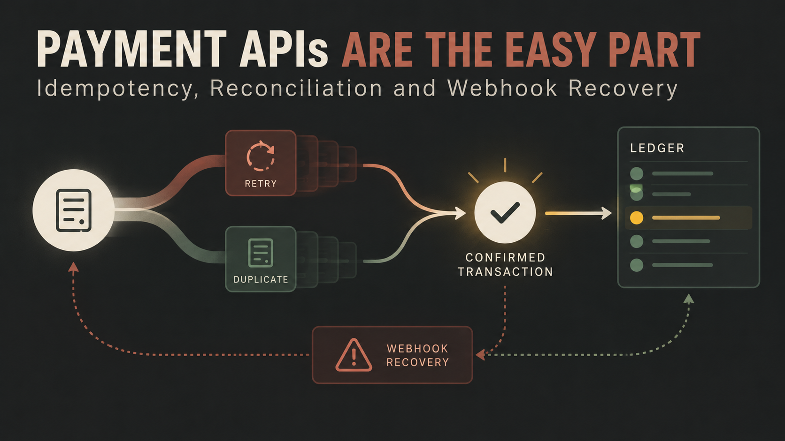

What should your application do when a customer pays, the provider completes the charge, and your server never receives the success response?
If the answer is “try the payment again,” you may charge the customer twice. If the answer is “mark it failed,” your records may disagree with the provider. If the answer is “wait and hope,” support teams inherit the problem.
Connecting to a payment API is usually the visible part of payment engineering. The harder work begins when networks time out, webhooks arrive late, workers restart and two systems report different states.
Distributed systems cannot always distinguish between “the operation failed” and “the operation succeeded but the acknowledgement was lost.” A mobile connection may drop after the provider processes a request. Your server may time out while the provider continues working. A retry can then look like a new instruction.
That uncertainty is normal. Reliable payment systems represent it explicitly with states such as pending, processing, succeeded, failed, reversed and needs_review. They do not force every ambiguous event into a simple success-or-failure field.
An idempotent operation produces one business effect even when the same request is submitted more than once. The client assigns a unique key to the intended operation and reuses that key for retries. The server stores or recognizes the first result and returns a consistent response instead of creating another charge.
Stripe documents this pattern for POST requests and recommends high-entropy keys such as UUIDv4 values. It also warns against placing personal or sensitive data inside an idempotency key.
The important design detail is that the key represents the business intent, not the network attempt. “Pay invoice 8472” should have one stable key across retries. A newly generated key for every retry defeats the protection.
Your own application should also enforce uniqueness. Store the provider, operation type, business reference, idempotency key, request fingerprint and final provider reference. Add a database uniqueness constraint where appropriate. Application-level checks alone can still race under concurrency.
Many payment results are asynchronous. A provider sends a webhook when a bank confirms a payment, a charge is disputed or a refund changes status. Webhooks are essential, but delivery is not the same as processing.
A secure handler should verify the provider’s signature using the unmodified request body, record the event ID, reject duplicates, persist the event, return a successful HTTP response quickly and move slow work to a background queue.
Stripe’s documentation explicitly recommends returning a 2xx response before complex processing that could cause a timeout. It also requires the raw body for signature verification. Parsing and re-serializing the payload before verification can break that check.
Webhook events may be duplicated, delayed or delivered in an order different from the business sequence. The handler therefore needs idempotency of its own. Store each provider event ID and make repeated delivery a harmless no-op.
A single mutable status field is not enough for serious payment operations. Keep an append-only event or transition history alongside the current state. Record when the event occurred at the provider, when your system received it and when processing completed.
This gives support and engineering teams answers when a customer says money left their account but the order still shows unpaid. Without a timeline, diagnosis becomes guesswork.
A practical record may include:
Webhooks should not be the only mechanism that makes records correct. Reconciliation compares your ledger with the provider’s authoritative records and identifies missing, duplicated or inconsistent transactions.
For some systems, reconciliation runs from daily settlement files. For others, a scheduled worker queries provider APIs for transactions that have remained pending beyond an expected window. High-volume platforms may do both.
The job should classify differences rather than silently overwrite them. A provider-success and local-pending mismatch can be repaired automatically when the references and amounts agree. A currency or amount mismatch should be escalated. A local-success record missing from the provider requires investigation before fulfilment continues.
Retries should be bounded, observable and based on the type of failure. A network timeout or provider 5xx response may justify exponential backoff with jitter. A validation error usually will not improve on the fifth attempt. Authentication failures should trigger an operational alert, not an endless queue.
After the retry budget is exhausted, move the item to a recoverable failed state or dead-letter queue. Give operators a safe way to inspect, replay or resolve it. Manual recovery should reuse the original business identifiers and idempotency protections.
Payment success and product fulfilment are separate business operations. A successful charge may trigger inventory allocation, airtime recharge, subscription activation, shipment creation or a third-party API call. Each downstream step can fail after the payment has already succeeded.
Treat fulfilment as a durable workflow. Record its state, use a queue, make commands idempotent and provide compensation or refund procedures. Never rely on a browser redirect as proof of payment. Customers close tabs, redirects fail and malicious clients can imitate frontend requests.
Useful payment monitoring tracks success rate, pending age, webhook latency, duplicate events, retry volume, provider error codes, reconciliation mismatches and fulfilment lag. Alerts should be tied to customer or financial impact, not every isolated warning.
Good internal tools also matter. Support staff should be able to search by order, customer, provider reference or phone number without seeing unnecessary secrets. They should understand what happened and what action is safe.
The API request proves your code can speak to a provider. The recovery design proves your business can depend on it.
Idempotency protects customers from duplicate effects. Signed webhooks carry asynchronous evidence. Reconciliation repairs missed information. Durable workflows separate payment from fulfilment. Logs and metrics make incidents diagnosable.
Those are not optional refinements. They are the system.
I build payment, API and fintech workflows designed for real network failures, duplicate events and operational recovery. To discuss an integration, email hello@massoda.me or contact me on WhatsApp.